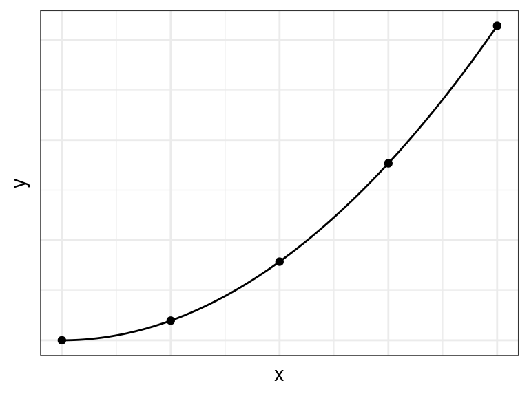
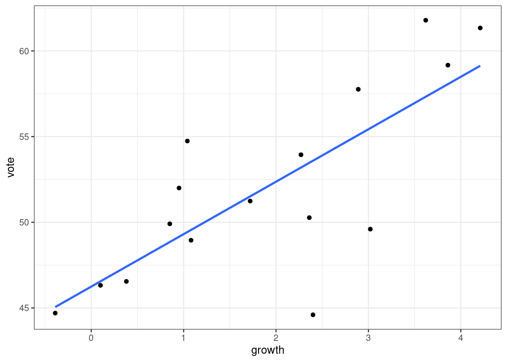
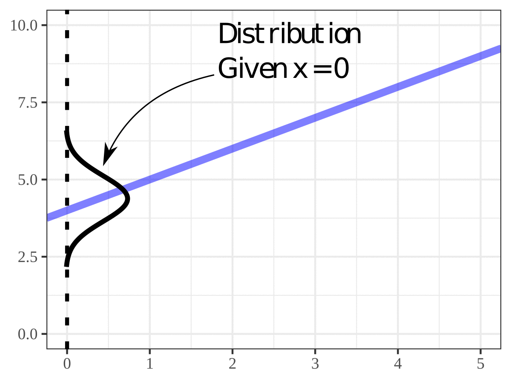
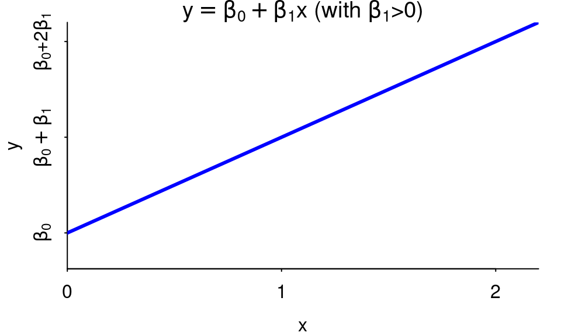
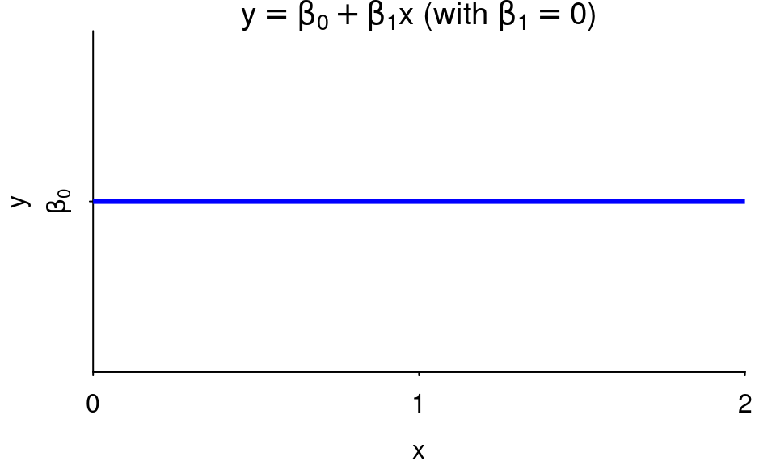
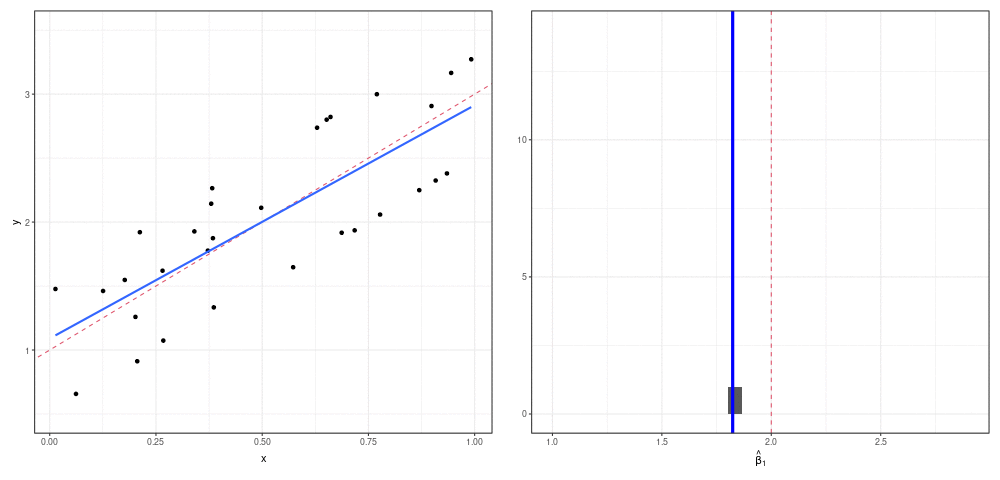
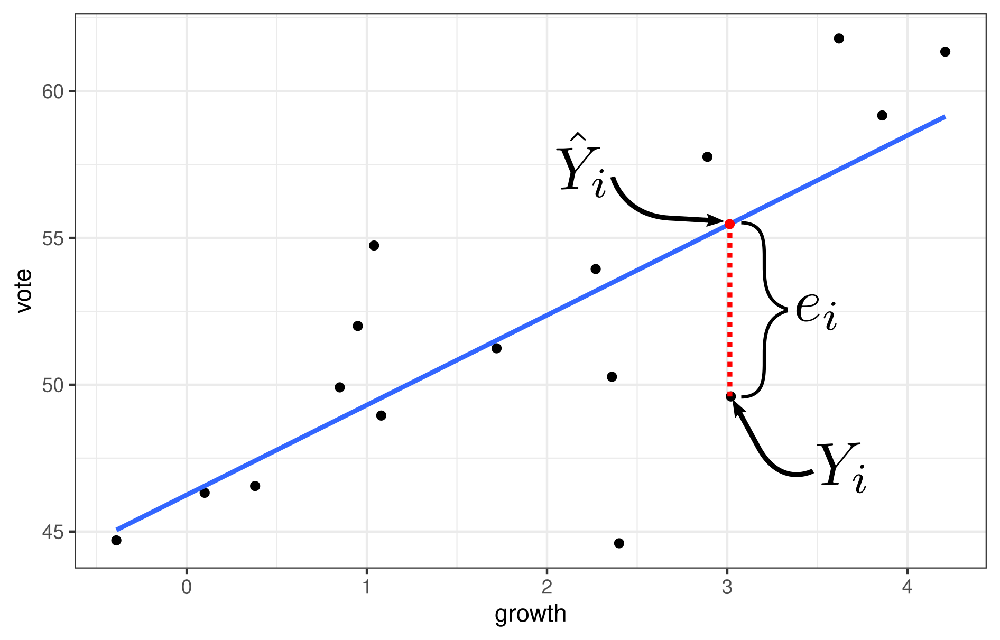
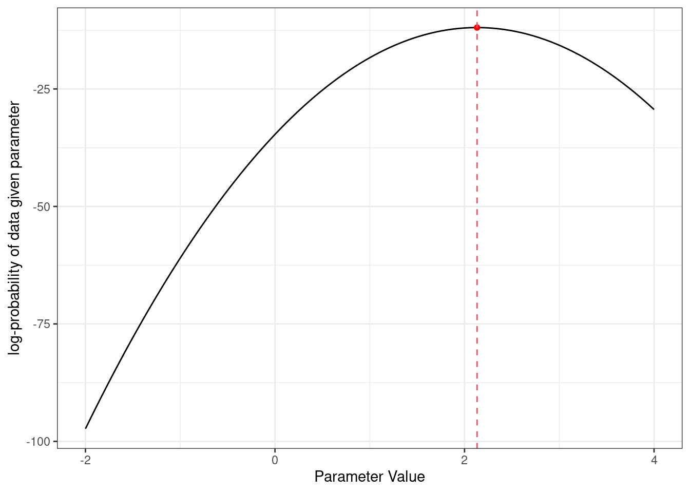

Simple Linear Regression: The Model
David Gerard
2022-10-12
Learning Objectives
- Chapter 1 of KNNL.
- Goals of regression analysis.
- The simple linear regression model.
- Least-squares approach to estimating parameters.
- The Ordinary Least Squares (OLS) estimates.
Overview
Observational/experimental Units: The people/places/things/animals/groups that we collect information about. Also known as “individuals” or “cases”. Sometimes I just say “units”.
Variable: A property of the observational/experimental units.
- E.g.: height of a person, area of a country, marital status.
Value: The specific level of a variable for an observational/experimental unit.
- E.g.: Bob is 5’11’’, China has an area of 3,705,407 square miles, Jane is divorced.
Quantitative Variable: The variable takes on numerical values where arithmetic operations (\(+\)/\(-\)/\(\times\)/\(\div\)) make sense.
- E.g.: height, weight, area, income.
- Counterexample: Phone numbers, social security numbers.
Regression Analysis: Study relationship between or more quantitative variables.
Response Variable:
- What we think is either caused by or explained by the predictor variable.
- Also called “outcome variable” and “dependent variable”.
- Usually denote this with the letter \(y\).
Predictor Variable:
- What we think causes or explains the outcome variable.
- Also called a “feature”, “explanatory variable”, “independent variable”, and (when doing an experiment) a “treatment variable”.
- Typically have more than one predictor.
- Usually denote these with the letters \(x_1\), \(x_2\), \(x_3\), \(\ldots\), \(x_p\).
Two quantitative variables can have either a functional or a statistical relationship.
Functional relationship: There is an exact mathematical formula relating the value of one quantitative variable \(x\) (the predictor) to the other \(y\) (the response). \[ y = f(x) \] \(f()\) is some function relating the correspondence of \(x\) to \(y\).
- E.g.: \(x\) = the radius of a circle and \(y\) = the area of a circle then \[ y = \pi x^2 \]

Statistical Relationship:
Is not a perfect relation.
Functional + noise.
E.g. “bread and peace” data from Chapter 7 of ROS looking at the statistical relationship between economic growth and vote-share of the incumbant for president.
library(readr) library(ggplot2) hibbs <- read_csv("https://dcgerard.github.io/stat_415_615/data/hibbs.csv") qplot(x = growth, y = vote, data = hibbs) + geom_smooth(method = "lm", se = FALSE)
Can say higher higher growth has higher vote-share on average. But relationship is not perfect (but still pretty good!)
The scattering of points about the line represents variation in vote share that is not associated with economic growth.
Goals of Regression:
- Description:
- Gene expression (\(x\)) is associated with height (\(y\)).
- Biological sex (\(x\)) is associated with salary (\(y\)).
- Prediction:
- Predict sales (\(y\)) based on product attributes (\(x\)’s)
- Predict crop yield (\(y\)) based on genomic markers (\(x\)’s)
- Description:
When we describe relationships, this does not imply causation.
- You need very special settings for “causal inference”, which we might cover later in the course.
- One special case where we can make causal claims is when we have a completely randomized experiment, where predictor values are randomly assigned.
E.g. A researcher noticed that murder rates went up whenever ice cream consumption increased.
The Simple Linear Regression Model
The model: \[ Y_i = \beta_0 + \beta_i X_i + \epsilon_i \]
\(Y_i\): The response value for unit \(i\).
\(X_i\): The predictor value for unit \(i\).
\(\beta_0\): The \(y\)-intercept of the regression line.
\(\beta_1\): The slope of the regression line.
\(\epsilon_i\): The random noise of individual \(i\).
- This is a random variable.
- \(E[\epsilon_i] = 0\) (mean zero).
- \(var(\epsilon_i) = \sigma^2\) (variance is the same for all \(i\)).
- \(cor(\epsilon_i, \epsilon_j) = 0\) for all \(i \neq j\) (uncorrelated errors).
\(X_i\) and \(Y_i\) are typically known. We usually have a sample of \((X_1, Y_1), (X_2, Y_2), \ldots, (X_n, Y_n)\).
- E.g. \(X_i\) could be the economic growth in year \(i\), and \(Y_i\) could be the incumbent vote-share for year \(i\).
\(\beta_0\), \(\beta_1\) are called parameters and are typically not observed. They must be inferred from a sample of values \((X_1, Y_1), (X_2, Y_2), \ldots, (X_n, Y_n)\).
Regression line: \(y = \beta_0 + \beta_1x\)
Assumptions in decreasing order of importance:
Linearity: \(E[Y_i|X_i] = \beta_0 + \beta_1X_i\)
Uncorrelated errors: \(cor(\epsilon_i, \epsilon_j) = 0\) for all \(i \neq j\)
Constant Variance: \(var(\epsilon_i) = \sigma^2\)
Note: Distribution of \(Y_i\) is conditional on \(X_i\).

Exercise: Suppose the regression model between two variables is \[ Y_i = 3 + 2 x_i + \epsilon_i,~~var(\epsilon_i) = \sigma^2 \]
What is the mean of \(Y_i\) if \(X_i = -1\)?
What is the variance of \(Y_i\) if \(X_i = -1\)?
Suppose \(X_i = 1\) and \(Y_i = 4\). What is \(\epsilon_i\)?
Review of interpretation
\(\beta_0\):
- \(Y\)-intercept of the regression line.
- If \(0\) is in the range of the \(X_i\)’s, then can also interpret this as the value of \(E[Y_i|X_i = 0]\). But cannot use this interpretation if 0 is outside of the \(X_i\)’s.
\(\beta_1\):
- Difference in average of \(Y_i\)’s when \(X_i\)’s differ by 1.
- Do not use implicitely causal language like “change” or “increase” or “decrease”.
Relationships are positive if \(\beta_1 > 0\) (larger \(x\) tend to correspond to larger \(y\)).

Relationships are negative if \(\beta_1 < 0\) (larger \(x\) tend to correspond to smaller \(y\)).

Two variables are uncorrelated if \(\beta_1 = 0\) (the value of \(x\) does not matter, the value of \(y\) tends to stay the same).

Example: In the bread and peace example, a regression line that fits the data well is
\[ y = 46.25 + 3.06 \]
Correct: Years that show 1 percentage point more growth have on average 3 percentage points larger vote shares for the incumbant.
Incorrect: Incumbant vote-share increases 3 percentage points for each 1 percentage point increase in growth.
Estimating Parameters
We have data \((X_1, Y_1), (X_2, Y_2), \ldots, (X_n, Y_n)\), and we want to estimate \(\beta_0\) and \(\beta_1\) in the equation
\[ Y_i = \beta_0 + \beta_1 X_i + \epsilon_i \]
Idea: Try to get \(Y_i\) as close to its mean. So we want each \(Y_i - (\beta_0 + \beta_1 X_i)\) to be close to 0.
To make all of these differences on average close to zero, consider minimizing the sum of squares:
\[ \sum_{i=1}^n \left[Y_i - (\beta_0 + \beta_1 X_i)\right]^2 \]
Visualization:

We can solve for the \(\beta_0\) and \(\beta_1\) that minimize this sum of squares.
We denote the resulting estimates by \(\hat{\beta}_0\) and \(\hat{\beta}_1\), and call them the OLS estimates (ordinary least squares estimates).
In equations:
\[\begin{align} \hat{\beta}_0 &= \bar{Y} - \hat{\beta}_1\bar{X},\\ \hat{\beta}_1 &= cor(X, Y) \frac{sd(Y)}{sd(X)},\\ cor(X, Y) &= \frac{\frac{1}{n-1}\sum_{i=1}^n(X_i - \bar{X})(Y_i - \bar{Y})}{\sqrt{\frac{1}{n-1}\sum_{i=1}^n(X_i - \bar{X})^2}\sqrt{\frac{1}{n-1}\sum_{i=1}^n(Y_i - \bar{Y})^2}},\\ sd(X) &= \sqrt{\frac{1}{n-1}\sum_{i=1}^n(X_i - \bar{X})^2},\\ sd(Y) &= \sqrt{\frac{1}{n-1}\sum_{i=1}^n(Y_i - \bar{Y})^2}. \end{align}\]
Notice that the estimate of \(\beta_1\) is a linear function of the correlation coefficient.
To derive these (if you are a Statistics BS or MS, you should do this exercise once without looking at the solution):
- Take the derivative of the least squares objective function with respect to both \(\beta_0\) and \(\beta_1\).
- Set equal to 0 and solve for \(\beta_0\) and \(\beta_1\) (2 equations and 2 unknowns).
- Simplify into the terms above.
- Use a second derivative test to verify that this is a minimum.
Note on Least Squares
Least squares inference is much more widely applicable to beyond the linear model.
Suppose
\[ Y_i = f(X_i;\theta) + \epsilon_i, \]
where \(\theta\) is some vector of parameters. E.g. in the simple linear regression model \[ \theta = (\beta_0, \beta_1) \text{ and}\\ f(X_i;\theta) = \beta_0 + \beta_1X_i \] Then we can estimate \(\theta\) by minimizing the sum of squares over \(\theta\).
\[ \hat{\theta} = \text{argmin}_{\theta}\sum_{i=1}^n\left[Y_i - f(X_i;\theta)\right]^2 \]
If it is hard to find \(\hat{\theta}\) analytically, then there are numerical procedures that can be used to systematically minimize the sum of squares (e.g. gradient descent).
Finding OLS Estimates in R
Use
lm()(for “linear model”) to obtain coefficient estimates.The first argument of
lm()is a formula of the formresponse ~ predictor. That squiggly line (~) separating the response from the predictor is called a “tilde”.The second argument is the data frame that holds the variables.
Using the Hibbs data
lmout <- lm(vote ~ growth, data = hibbs)You can print out the values and the values under
Coefficientsare the OLS estimates of \(\beta_0\) and \(\beta_1\).lmout## ## Call: ## lm(formula = vote ~ growth, data = hibbs) ## ## Coefficients: ## (Intercept) growth ## 46.25 3.06\(\hat{\beta}_0 = 46.25\)
\(\hat{\beta}_1 = 3.06\)
Estimated regression line: \(y = 46.25 + 3.06 x\).
It is a pain to extract these values using base R, but the
{broom}package has a nice function calledtidy()that returns coefficient estimates in a data frame.library(broom) est <- tidy(lmout) est## # A tibble: 2 × 5 ## term estimate std.error statistic p.value ## <chr> <dbl> <dbl> <dbl> <dbl> ## 1 (Intercept) 46.2 1.62 28.5 8.41e-14 ## 2 growth 3.06 0.696 4.40 6.10e- 4est$estimate## [1] 46.248 3.061Exercise: From the
mtcarsdata, find the OLS estimates ofmpg(the response) onwt(the predictor). Interpret the coefficients. You can load these data into R using:data("mtcars")
Properties of OLS Estimates
Unbiased:
\[ E[\hat{\beta}_0] = \beta_0\\ E[\hat{\beta}_1] = \beta_1 \]
Gauss-Markov Theorem
The OLS estimates have minimum sampling variance in the class of unbiased estimators that are linear functions of \(Y_1, Y_2,\ldots,Y_n\).
Recall sampling distribution: The distribution of an estimator across many theoretical samples. The sampling variance is the variance of the sampling distribution.
Let’s demonstrate the unbiased property through simulation.

- Above Left:
- Red dashed line is true regression relationship between \(x\) and \(y\).
- New samples are collected.
- Blue line is the OLS line of the sample. This line corresponds to \(\hat{\beta}_0\) and \(\hat{\beta}_1\).
- Note that the vertical error terms are decidedly not normal, but this is fine.
- Above Right:
- Histogram of the the \(\hat{\beta}_1\)’s from the various samples.
- Red dashed line is the true \(\beta_1\).
- Blue line is the mean of the \(\hat{\beta}_1\)’s.
- Blue line is approximately red line after many repeated samples.
- Above Left:
Note: In this simulation process, the \(X_i\)’s were fixed each replication (from sample to sample). This is an assumption of most sampling properties that we’ll discuss.
Estimating mean response
The estimated regression line is
\[ \hat{Y} = \hat{\beta}_0 + \hat{\beta}_1X \]
\(\hat{Y}\) is the estimate of the mean response when the level of the predictor is \(X\).
We set \(\hat{Y}_i = \hat{\beta}_0 + \hat{\beta}_1X_i\) for the observed levels of predictors \(X_1, X_2,\ldots, X_n\). These are called the fitted values. These are in contrast to the observed values, which are just the original \(Y_1,Y_2,\ldots,Y_n\).
Exercise: Recall that in the bread and peace example, the estimated regression function is \[ \hat{Y} = 46.248 + 3.061 X \] What is the estimated mean incumbant vote-share when the growth is 2%?
Residuals
We often evaluate the performance of a model by looking at how far the fitted values are from the observed values.
The \(i\)th residual are \[ e_i = Y_i - \hat{Y}_i. \]
These are different from the model error terms, which are \[ \epsilon_i = Y_i - E[Y_i|X_i] \]
The residuals are the deviation from an estimated regression function, and so are known.
The error terms are the deviation from the unknown true regression function, and so are unknown.
Graphic:

Exercise: In the above graphic, is the residual positive or negative? Did we underestimate or over estimate here?
Obtaining fitted values and residuals in R
To obtain predictions, you need to
- Have the output of
lm()saved to a variable. - Have a data frame with the new predictor values you want.
- Use the
predict()function.
lmout <- lm(vote ~ growth, data = hibbs) newdf <- data.frame(growth = c(1.1, 2.2)) newdf## growth ## 1 1.1 ## 2 2.2predict(object = lmout, newdata = newdf)## 1 2 ## 49.61 52.98- Have the output of
To obtain the fitted values and the residuals, use
augment()from the{broom}package. Pass to it the output fromlm().aout <- augment(x = lmout) glimpse(aout)## Rows: 16 ## Columns: 8 ## $ vote <dbl> 44.60, 57.76, 49.91, 61.34, 49.60, 61.79, 48.95, 44.70, 59.… ## $ growth <dbl> 2.40, 2.89, 0.85, 4.21, 3.02, 3.62, 1.08, -0.39, 3.86, 2.27… ## $ .fitted <dbl> 53.59, 55.09, 48.85, 59.13, 55.49, 57.33, 49.55, 45.05, 58.… ## $ .resid <dbl> -8.9929, 2.6674, 1.0609, 2.2075, -5.8904, 4.4632, -0.6030, … ## $ .hat <dbl> 0.07114, 0.09622, 0.10006, 0.24556, 0.10563, 0.16406, 0.085… ## $ .sigma <dbl> 2.925, 3.827, 3.893, 3.841, 3.502, 3.663, 3.901, 3.904, 3.8… ## $ .cooksd <dbl> 0.2354373, 0.0295910, 0.0049093, 0.0742250, 0.1617682, 0.16… ## $ .std.resid <dbl> -2.47947, 0.74558, 0.29717, 0.67535, -1.65509, 1.29717, -0.…
Alternative means to obtain fitted values and residuals in R.
If
augment()does not work, there are base R methods to obtain residuals and fitted values.You can get the residuals via
residuals()residuals(object = lmout)## 1 2 3 4 5 6 7 8 9 10 ## -8.9929 2.6674 1.0609 2.2075 -5.8904 4.4632 -0.6030 -0.3540 1.1087 0.7450 ## 11 12 13 14 15 16 ## -0.8606 5.3094 -3.2005 -0.2718 -0.2337 2.8449You can get the fitted values via
fitted().fitted(object = lmout)## 1 2 3 4 5 6 7 8 9 10 11 12 13 ## 53.59 55.09 48.85 59.13 55.49 57.33 49.55 45.05 58.06 53.20 47.41 49.43 53.47 ## 14 15 16 ## 51.51 46.55 49.16
Properties of Fitted Regression Line
- I’ve seen folks over-interpret these items when they are just properties of every OLS line. So it’s good to be aware of these.
Mean of residuals is 0. \[ \frac{1}{n}\sum_{i=1}^n e_i = 0 \]
Mean of observed values equals mean of fitted values. \[ \frac{1}{n}\sum_{i=1}^nY_i = \frac{1}{n}\sum_{i=1}^n\hat{Y}_i \]
Residuals are uncorrelated with predictors \[ \frac{1}{n-1}\sum_{i=1}^n(X_i-\bar{X})(e_i - \bar{e}) = 0 \] (but remember that \(\bar{e} = 0\)).
Residuals are uncorrelated with fitted values. \[ \frac{1}{n-1}\sum_{i=1}^n(\hat{Y}_i-\bar{\hat{Y}})(e_i - \bar{e}) = 0 \] But note that the residuals can be correlated with the observed values.
The regression line always goes through the mean \((\bar{X}, \bar{Y})\).
- Exercise: Demonstrate each of these properties on using the bread and peace data using R.
Estimating \(\sigma^2\)
We’ll need an estimate of the variance to do inference (see Chapter 2).
Recall that the simple linear regression model is \[ Y_i = \beta_0 + \beta_1X_i + \epsilon_i\\ E[\epsilon_i] = 0\\ var(\epsilon_i) = \sigma^2 \]
So if we knew \(\beta_0\) and \(\beta_1\) and wanted to estimate \(\sigma^2\), we could calculate \[ \epsilon_i = Y_i - (\beta_0 + \beta_1X_i) \] Then take the sample variance of the \(\epsilon_i\)’s.
But we don’t know \(\beta_0\) and \(\beta_1\), so we insert their OLS estimates to get the residuals \[ e_i = Y_i - (\hat{\beta}_0 + \hat{\beta}_1X_i) \] And then take the sample variance of the residuals to estimate \(\sigma^2\).
We divide by \(n-2\) to account for the two degrees of freedom lost when estimating \(\beta_0\) and \(\beta_1\).
\[\begin{align} \hat{\sigma}^2 &= \frac{1}{n-2}\sum_{i=1}^ne_i^2\\ &= \frac{1}{n-2}\sum_{i=1}^n(Y_i - \hat{Y}_i)^2\\ &= \frac{1}{n-2}\sum_{i=1}^n[Y_i - (\hat{\beta}_0 + \hat{\beta}_1X_i)]^2 \end{align}\]
This estimate is sometimes called the Mean Squared Error (MSE).
Intuition behind degrees of freedom
If we knew \(\beta_0\) and \(\beta_1\), the best variance estimator we could come up with would be \[ s_1^2 = \frac{1}{n}\sum_{i=1}^n[Y_i - (\beta_0 + \beta_1X_i)]^2 \]
But we don’t know these quantities, so we use \(\hat{\beta}_1\) and \(\hat{\beta}_2\).
\[ s_2^2 = \frac{1}{n}\sum_{i=1}^n[Y_i - (\hat{\beta}_0 + \hat{\beta}_1X_i)]^2 \]
But remember that \(\hat{\beta}_1\) and \(\hat{\beta}_2\) minimize the objective, which is exactly the MSE. That means that \[ s_2^2 < s_1^2 \]
Dividing by the smaller \(n-2\) instead of the larger \(n\) corrects for this. That’s why we use \[ \hat{\sigma}^2 = \frac{1}{n-2}\sum_{i=1}^n[Y_i - (\hat{\beta}_0 + \hat{\beta}_1X_i)]^2 \]
It can be shown that \[ E[\hat{\sigma}^2] = \sigma^2 \]
The Normal Linear Model
We have so far made only minimal distributional assumptions. We have not assumed normality so far. All of these properties of the OLS estimators hold without assuming normality.
We sometimes assume that the error terms are normally distributed. The normal simple linear model is
\[ Y_i = \beta_0 + \beta_1 X_i + \epsilon_i\\ \epsilon_i \sim N(0, \sigma^2)\\ \epsilon_1,\epsilon_2,\ldots,\epsilon_n \text{ are mutually independent}. \]
“Mutually independent” means that knowing the value of one tells you nothing about the values of the others.
- In the normal model, uncorrelated \(\Leftrightarrow\) independent.
This implies that \[ Y_i|X_i \sim N(\beta_0 + \beta_1 X_i, \sigma^2) \]
Exercise: Do we assume that the predictors are normally distributed?
In the normal linear model, we thus have four assumptions, in decreasing order of importance:
Linearity: \(E[Y_i|X_i] = \beta_0 + \beta_1X_i\)
Uncorrelated errors: \(cor(\epsilon_i, \epsilon_j) = 0\) for all \(i \neq j\)
Constant Variance: \(var(\epsilon_i) = \sigma^2\)
Normality: \(\epsilon_i \sim N(0, \sigma^2)\)
The normality assumption is really only important if
- You have a small sample size and the data are highly skewed, or
- You are calculating prediction intervals (Chapter 2).
Method of Maximum Likelihood
We used the method of least squares to obtain the OLS estimates \(\hat{\beta}_0\) and \(\hat{\beta}_1\).
We can derive these estimators using a different technique: the method of maximum likelihood.
Idea: Given a data-generative model (like the normal linear model), find the parameters that maximize the probability of seeing the data that we actually saw.

This function of the parameter is called the likelihood function, and the parameter that maximized this function is called the maximum likelihood estimate.
Given the normal assumption and values of \(\beta_0\), \(\beta_1\), and \(\sigma^2\), we can calculate the density (which roughly means the probability) of our observed sample \((X_1, Y_1),(X_2, Y_2),\ldots, (X_n, Y_n)\).
\[ f(data|\beta_0,\beta_1,\sigma^2) = \prod_{i=1}^n N(Y_i|\beta_0 + \beta_1X_i, \sigma^2) \]
Here, \(N(a|b,c^2)\) is notation for the density of value \(a\) with mean \(b\) and variance \(c^2\): \[ N(a|b,c^2) = \frac{1}{\sqrt{2\pi c^2}}\exp\left[-\frac{1}{2c^2}(a-b)^2\right] \]
One idea is to find the values of \(\beta_0\), \(\beta_1\), and \(\sigma^2\) to make the data that we did observe as likely as possible.
Typically, we actually work with the log-likelihood \[ L(data|\beta_0,\beta_1,\sigma^2) = \sum_{i=1}^n \log \left[N(Y_i|\beta_0 + \beta_1X_i, \sigma^2)\right] \]
Let’s calculate the log-likelihood from the bread and peace example at \(\beta_0 = 45\), \(\beta_1 = 3\) and \(\sigma^2 = 3.5\)
ll <- function(beta0, beta1, sigma2) { dnorm(x = hibbs$vote, mean = beta0 + beta1 * hibbs$growth, sd = sqrt(sigma2), log = TRUE) %>% sum() } ll(4, 3, 3.5)## [1] -4155Now let’s do it at the OLS estimates
ll(46.25, 3.06, 3.76)## [1] -51.66Much higher!
It turns out the the OLS estimates of \(\beta_0\) and \(\beta_1\) are also the maximum likelihood estimates of \(\beta_0\) and \(\beta_1\).
The MLE of \(\sigma^2\) is \(\frac{n-2}{n}\hat{\sigma}^2\) (the uncorrected standard deviation estimate).
Derivation \[\begin{align} \max \sum_{i=1}^n \log \left[N(Y_i|\beta_0 + \beta_1X_i, \sigma^2)\right] &= \max\sum_{i=1}^n\left[-\frac{1}{2}\log(2\pi\sigma^2) - \frac{1}{2\sigma^2}(Y_i - \beta_0 - \beta_1X_i)^2\right]\\ &= \min\sum_{i=1}^n\left[\frac{1}{2}\log(2\pi\sigma^2) + \frac{1}{2\sigma^2}(Y_i - \beta_0 - \beta_1X_i)^2\right]\\ &= \min\left[n\frac{1}{2}\log(2\pi\sigma^2) + \frac{1}{2\sigma^2}\sum_{i=1}^n(Y_i - \beta_0 - \beta_1X_i)^2\right] \end{align}\]
When we minimize over \(\beta_0\) and \(\beta_1\), we just need to worry about the second term. But this is equivalent to minimizing the sum of squares!
Maximum likelihood estimation is a very general approach to estimating a parameter given a data generative model.